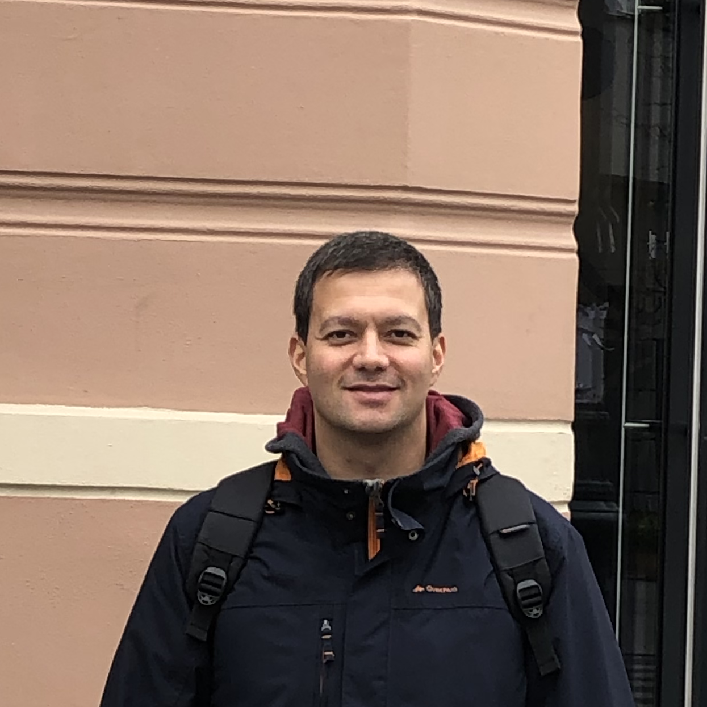
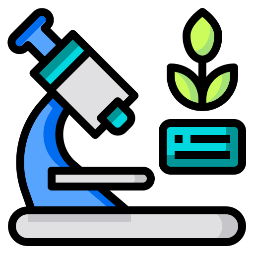

Hello. I'm Levent Can.
I am a biologist with more than 10 years of experience in teaching and research, mainly focusing on plant systematics and taxonomy. I am currently working at the University Oldenburg (Albach Lab), and I am the Managing Editor of TAXON. At the same time, the Covid-19 crisis helped me to rediscover my passion for web development.
My Skills.

Teaching.
I have been teaching plant anatomy and morphology, plant identification, phylogeny and evolution, histology, and general biology courses in Turkey (NKU) and Germany (UOL) in English, German, and Turkish.

Research.
In my research I focused on methods such as DNA-based phylogenetic analyses, genotyping, karyotyping, pollen morphology, and morphometrics in order to have a better understanding of systematic relations of various plant groups.
Field Work.
In order to acquire the material for my research, I conducted a number of excursions. Altai, Kazakhstan, Russia, Turkey, Israel, Romania, and Germany are just a few of my destinations. Some of my observations can be reviewed at iNaturalist.
Publication.
I have published a number of papers, among one new Crocus species. Since 2018, I administer the operations of a scientific journal, TAXON, as the Managing Editor.
Web Development.
I also design and develope websites which run across devices, focusing on simple design, content, and conveying the message that is intended to be delivered.